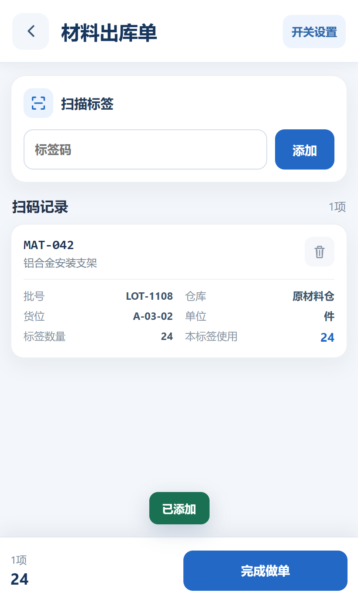

材料出库单Material Issue
扫码确认本次领料量Scan and confirm the material issue quantity
生产线需要一批安装支架。仓管员可选生产订单，扫标签确认本次领料数量，并在单据管理中查看上传结果。需要超领时，按单据开关和原单要求确认数量及归属。When the production line needs brackets, the operator can select a production order, scan the label, and confirm the issue quantity. The upload result appears in Document Management. For an excess issue, follow the document settings and source order to confirm the extra quantity and its allocation.
